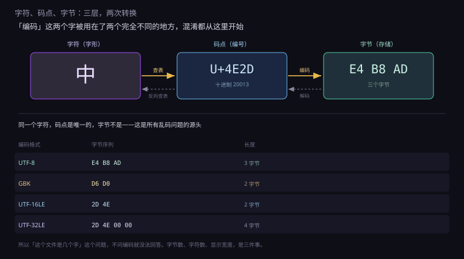
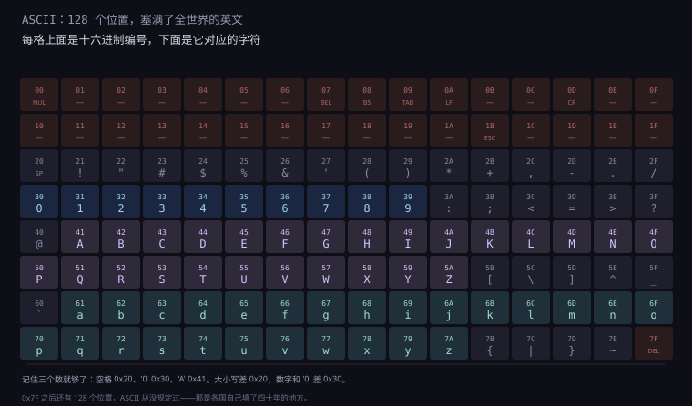
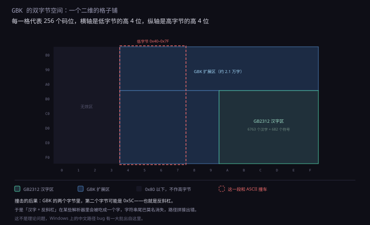
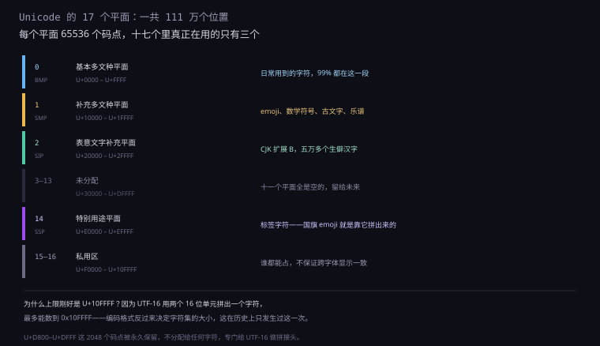
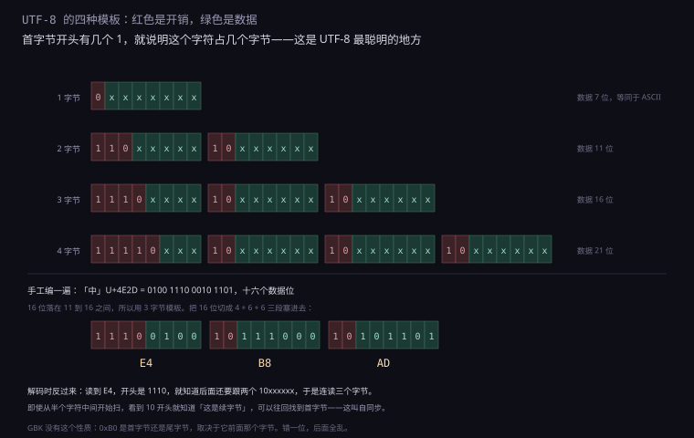
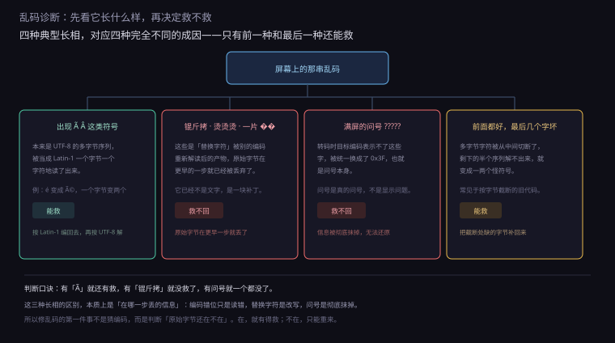

约 1.3 万字 · 6 张图 · 读完你能手工把「中」编成三个字节、 说清「锟斤拷」是怎么来的、以及为什么一个 emoji 在 JavaScript 里长度是 2
打开任何一个十六进制编辑器，看一个只含 A 的文本文件，你会看到 41。
十进制是 65。为什么是 65，不是 1，不是 200？
答案是：没有为什么，这是人定的。 1963 年，一群美国工程师坐下来开会，把当时几种电传打字机的编码方案折中了一下， 定出一张表，规定 65 代表大写 A。这张表后来叫 ASCII，一直用到今天。
这件事值得停一下想清楚：字节和字符之间是一条人为的约定，不是物理规律。
内存里那八个比特 0100 0001 本身没有任何含义，
是「按 ASCII 表查」这个动作，才让它变成 A。
既然是约定，就可以有别的约定。同一串字节，换一张表查，就成了别的东西。 这就是乱码的全部原理——不多不少，就是查错了表。
但在讲乱码之前，先把这条链上的三层分开。图 1.1.4-1 是这三层。

最上面一层是字符：你眼睛看到的一个个字形，「中」「A」「é」。 它是抽象的东西，不属于计算机，属于文字学。
中间一层是码点（code point）：给每个字符分配一个整数编号。
比如「中」是 20013，写成十六进制 U+4E2D。
这一层解决的是「世界上到底有多少个字符，怎么给它们排队编号」。
最下面一层是字节：真正写进文件、发到网上的那串 0 和 1。 这一层解决的是「这个编号怎么塞进字节里，占几个，怎么排」。
两层转换各有一个名字，但中文里都被叫做「编码」，这是混乱的源头之一。 准确的说法应该是： 字符 → 码点 叫「查字符集」， 码点 → 字节 才叫「编码」（encoding），反向叫「解码」（decoding）。
图里还藏了一个数字：UTF-32 存「中」是 2D 4E 00 00。
为什么是 2D 4E 而不是 4E 2D？因为 x86 是小端，低字节在前。
这个细节留到 1.1.4-7 讲 BOM 时再展开。
顺带说一条「另一条时间线」。1960 年代并不是只有 ASCII 一个方案，
IBM 的大型机用的是另一套叫 EBCDIC 的编码，同样 8 位、256 个位置，
但排法几乎没有规律：字母不连续，A 到 I 是 0xC1 到 0xC9，
J 到 R 直接跳到 0xD1；数字也不连续。
为什么这么排？因为它是从穿孔卡片的孔位直接翻译过来的， 每个编码对应卡片上一种特定的打孔组合，而不是按字母顺序。 这是「历史包袱」最典型的形态：一套为机械设计的方案，被硬带进了电子时代。
后果延续到今天：把文件从 IBM 大型机转到 Unix 服务器，仍然需要专门的转换表。 ASCII 之所以能赢，一个重要原因是它的字母连续——这让排序、范围判断、大小写转换 都能用减法或位运算完成，而 EBCDIC 上这些操作必须查表。 一张表怎么排，会决定后面五十年的编程方式。
ASCII 全称是美国信息交换标准代码（American Standard Code for Information Interchange）。 它只用了 7 个比特，共 128 个位置。
为什么是 7 位而不是 8 位？因为它的前身是电传打字机的 5 位编码（博多码）， 5 位只有 32 种组合，不够用；扩到 7 位有 128 种，够表示英文大小写、数字、标点和一堆控制符。 而当时的传输设备按 8 位一个字节走，剩下的第 8 位正好拿来做奇偶校验—— 传输出错时能发现。所以 ASCII 天生是 7 位的，第 8 位是后来才被各国拿去干别的。
图 1.1.4-2 是完整的 128 个位置。这张图值得盯一会儿，因为它不是随便排的，里面有很明显的设计痕迹。

第一个痕迹：数字 0 到 9 是连续的，0x30 到 0x39。
所以要把一个字符数字转成数值，只要减 0x30：
'7' - '0' = 0x37 - 0x30 = 7
'0' + 7 = 0x30 + 7 = 0x37 = '7'
第二个痕迹：大写字母 A 到 Z 连续（0x41 到 0x5A），
小写 a 到 z 也连续（0x61 到 0x7A）。
而且两段之间刚好差 0x20，也就是二进制第 5 位（从 0 数）：
'A' = 0100 0001
'a' = 0110 0001
↑
只差这一位这个设计极其省事。大小写转换不用查表，一个异或就行：
大写转小写：c | 0x20
小写转大写：c & ~0x20
大小写互换：c ^ 0x20
第三个痕迹在控制字符区。0x00 到 0x1F 这 32 个位置，
放的全是「动作」而不是「字符」：响铃、退格、制表、换行、回车、换页、转义。
它们的历史比计算机还早，是从打字机电报机直接继承下来的。
其中最值得说的是 0x0D（CR，回车）和 0x0A（LF，换行）。
这是两个不同的物理动作：CR 是把打字机的字车推回行首，LF 是把滚筒转一行。
在机械打字机上，你必须做两次：先回车，再换行，才能到下一行的开头。
这个历史残留一直留到今天：Windows 的文本文件用 CR LF 两个字节结尾（0D 0A），
Unix 只用 LF，老 Mac 只用 CR。
三家用三种约定，几十年来一直没统一，跨平台写文本文件时的麻烦八成来自这里。
这些控制字符今天还在用，只是换了场合。举几个具体的：
| 编码 | 名字 | 当年干什么 | 今天在哪还能见到 |
|---|---|---|---|
| 0x07 | BEL | 让电传机响一声铃 | 终端里的「响铃」，printf("\a") |
| 0x08 | BS | 退一格 | 退格键，\b |
| 0x09 | TAB | 跳到下一个制表位 | 制表符，\t |
| 0x0C | FF | 滚筒转到下一页 | 分页符，打印机还在用 |
| 0x1B | ESC | 切换到扩展指令集 | 终端颜色控制 \033[31m |
最后一行值得多说一句。ESC 当年是「接下来不是普通字符了」的信号，
这个用法被终端完整继承：今天你在命令行里看到的彩色输出，
底层就是 ESC [ 3 1 m 这几个字节，意思是「把前景色设成红色」。
一套为打字机设计的控制码，五十年后还在给终端上色。
这个排布还有一个常被忽略的后果：ASCII 的字典序和人的直觉不一致。
大写字母全部排在小写字母前面（0x41–0x5A 之后才是 0x61–0x7A）。
所以按 ASCII 排序，"Zebra" 会排在 "apple" 前面——
因为 Z 是 0x5A，a 是 0x61。数字又排在所有字母前面，
所以 "2024" 排在 "Apple" 前面。
这不是哪个系统的 bug，ASCII 就是这么定的。想让排序符合直觉， 必须在比较前做「大小写折叠」（case folding），把两边都转成小写再比。 这也是几乎所有语言的排序函数都要额外处理大小写的原因。
更麻烦的是，按字节排序对中文基本无效。 GBK 的一级汉字大致按拼音排，但不是严格的字典序；UTF-8 里则按码点排，接近部首笔画。 所以「按姓名排序」在数据库里必须靠专门的排序规则，不能指望字节比较。
0x20 空格、0x30 字符 '0'、0x41 大写 'A'。
其余全靠推：'a' 是 0x61，'z' 是 0x7A，'9' 是 0x39。
写底层代码时，这三个数比查表快。
最后一个细节：128 个位置里，0x7F 是 DEL（删除）。
它不在 0x00 到 0x1F 的控制区里，孤零零地放在最后。
原因是它当年用来「擦掉」纸带上的一个孔——把七个孔全打成 1，
正好是 0x7F，等于告诉读带机「这一格作废」。
ASCII 只解决了英文。世界上还有法语、德语、俄语、日语、中文、阿拉伯语…… 这些语言里的字符，128 个位置根本装不下。
于是每个国家做了同一件事：把空着的第 8 位用起来， 从 128 到 255 这另外 128 个位置，自己定一张表。
这套做法的正式名字叫「代码页」（code page）。IBM 当年给每个语言区编了号，
于是有了 CP437（美国 DOS）、CP850（西欧 DOS）、CP936（简体中文 Windows）、CP950（繁体中文）……
这套编号系统一直活到今天，你在 Windows 的命令行里敲 chcp，看到的就是当前代码页。
这里还有个历史细节：DOS 和 Windows 用的是两套代码页。 DOS 时代是 CP437、CP850 这些「OEM 代码页」，Windows 图形界面用的是 CP1252、CP936 这些「ANSI 代码页」。两套不兼容。
后果是：一个在 DOS 下用 CP437 存的中文文件（比如老游戏的文本）， 在 Windows 里用 CP936 打开就是乱码；反过来也一样。 这就是为什么九十年代的游戏汉化组要专门做「字库替换」—— 他们不只是翻译文本，还得把整个字符映射表换掉。
| 编码 | 语言 | 0xA0–0xFF 那 96 个位置放了什么 |
|---|---|---|
| ISO-8859-1 | 西欧 | é à ü ñ ß ç 等带音标的字母 |
| CP437 | DOS 英文 | 画线框的制表符、希腊字母、数学符号 |
| KOI8-R | 俄语 | 西里尔字母（而且排得和英文键位对应） |
| Shift-JIS | 日语 | 半个假名表 + 双字节汉字的首字节 |
| GB2312 | 简体中文 | 双字节汉字的首字节 |
| Big5 | 繁体中文 | 双字节汉字的首字节 |
注意最后三行：它们不只是「把 128 个位置填满」，而是把两个字节连起来用， 因为汉字有几千个，一个字节装不下。 具体怎么做的，下一节讲。
日文和韩文的做法更绕，值得单说两句，因为它们揭示了另一类麻烦。
日语有三套字：平假名、片假名、汉字，加起来几千个。 Shift-JIS 的解法是混用单字节和双字节： 0x00–0x7F 沿用 ASCII，0xA1–0xDF 放 63 个半角片假名， 剩下的空间用双字节放汉字和全角假名。
问题在于，半角片假名的范围（0xA1–0xDF）和双字节首字节的范围重叠。 所以读到 0xB1，你不知道它是「半角片假名」还是「某个汉字的前半截」， 必须看上下文。这个缺陷和 GBK 的「吃反斜杠」是同一类病，只是方向不同。
韩文更特殊。谚文是拼音文字，每个字由初声、中声、终声三部分拼成， 组合起来有一万多个音节。EUC-KR 的解法是把常用的 2350 个音节整字编码， 而不是编码字母再组合——这等于放弃了「拼写」的灵活性，换来了简单。
越南语则是另一个极端：它用拉丁字母，但有六个声调符号，一个字母可能要叠两个附加符号。 在 Unicode 里，一个「ế」既可以是预组合的一个码点，也可以是三个码点叠出来的。 这条线索留到 1.1.4-11 讲字素簇时再展开。
这套「各自为政」的方案有一个致命问题：同一个字节，在不同表里是不同的字符。
举个真实例子，字节 0xB0：
按 ISO-8859-1 读 → °（度符号）
按 CP437 读 → ░（浅色底纹块）
按 GBK 读 → 某个汉字的第一个字节，要再看下一个字节
按 UTF-8 读 → 非法字节，因为 0xB0 是 10110000，10 开头是续字节所以在 2000 年以前，一个文本文件离开它的语言环境，就必然乱码。 法国人发来的邮件，在中国打开是一片怪符号；中国人存的中文文件名， 拿到英文系统上全是问号。这不是故障，是设计如此——没有一张全球统一的表。
这种情况持续了将近二十年，直到 Unicode 和 UTF-8 铺开。 但即使今天，你依然会在三个地方撞见这套老方案： 老网站的页面源码、压缩包里解不出来的文件名、以及 Windows 中文版命令行里那些莫名其妙的符号。
汉字有多少个？《康熙字典》四万七千，《汉语大字典》五万六， 加上生僻字和异体字，接近十万。一个字节 256 种可能，远远不够。 所以中文从一开始就是双字节的。
1980 年发布的 GB 2312-80，是第一个国家标准。 它挑出了 6763 个最常用的汉字，加上 682 个非汉字图形符号，共 7445 个字符， 用两个字节表示。
这 6763 个汉字分两级：一级汉字 3755 个，按拼音排序； 二级汉字 3008 个，按部首排序。 一级汉字是日常用字，二级是次常用字。 这个分级不是随便定的——它让「按拼音找字」这件事在编码层面就有了物理上的邻近性。
具体的排法是「区位码」：把所有字符排成一个 94 行 × 94 列的表格，
行叫「区」，列叫「位」。区号 16 到 55 是一级汉字，56 到 87 是二级汉字。
要用的时候，区号和位号各加 0xA0，就得到两个字节：
「中」的区位码是 5448（第 54 区第 48 位）
高字节 = 54 + 0xA0 = 0xD6
低字节 = 48 + 0xA0 = 0xD0
所以 GB2312 里「中」= D6 D0区位码这个东西不是凭空的，它继承了中文电报码的传统。 电报码是四个数字表示一个汉字，从 0000 到 9999，按字典顺序排。 发报员查表把汉字转成数字，收报员再查回来——本质就是一张编码表， 只不过载体是纸而不是字节。
GB2312 的区位码保留了这种「四位数字」的思维方式，只是把区号和位号 藏进了两个字节的高位里。所以中国最早接触计算机的那批人， 对「编码就是查表」这件事有非常直观的理解——他们在电报时代就干过一遍了。
这个设计有个好处：两个字节的最高位都是 1（0xA1 到 0xFE 都 ≥ 0x80）， 所以永远不会和 ASCII（最高位 0）混淆。 一个字节一个字节地扫过去，看到最高位是 0 就是 ASCII 字符，是 1 就是汉字的开头， 逻辑非常简单。
但 GB2312 只收了 6763 个字，不够用。人名、地名、古籍、方言里的字经常打不出来， 于是 1995 年出了 GBK（K 是「扩展」的意思）。
GBK 把高字节范围扩到 0x81 到 0xFE，低字节扩到 0x40 到 0xFE，
收了 21003 个汉字和 883 个符号。图 1.1.4-3 是它的空间分布。

注意红色虚线框。GB2312 的低字节是 0xA1 到 0xFE，全在最高位为 1 的区间，
很安全。但 GBK 为了多塞字，把低字节扩到了 0x40，
这一段和 ASCII 的可打印区完全重叠。
后果之一是著名的「吃反斜杠」。反斜杠 \ 的编码是 0x5C，
落在 GBK 的低字节范围里。也就是说，存在一批汉字，它们的第二个字节是 0x5C。
当一个程序按字节处理字符串（而不是按字符），遇到「汉字 + 反斜杠」就会出问题：
它看到 0x5C，以为是转义符，把后面的字符吃掉了；
或者反过来，它把汉字的后半截当成了独立的反斜杠。
经典的现场是路径拼接：C:\测试\新建 这种路径在某些老程序里会莫名少一截。
这不是理论推演。PHP 处理 GBK 字符串时有个专门的安全问题就来自这里， 当年一批注入漏洞的根因，就是「多字节字符吃掉了转义符」。 解决的办法后来写进了语言规范：要么全用 UTF-8，要么在处理前先做编码检查。
2000 年，国家标准又升了一级：GB18030。 它用了变长设计——一个、两个或四个字节，能表示全部 Unicode 字符（包括 emoji）。 这是中国的强制标准，所有在中国销售的软件都必须支持。 它的四字节区（首字节 0x81-0xFE，第二字节 0x30-0x39）和 UTF-8 完全不兼容， 算是给历史包袱留的一条出路。
| 标准 | 发布 | 字符数 | 字节 | 能表示 emoji 吗 |
|---|---|---|---|---|
| GB2312 | 1980 | 7445 | 双字节 | 不能 |
| GBK | 1995 | 21886 | 双字节 | 不能 |
| GB18030 | 2000 | 全部 Unicode | 1/2/4 字节 | 能 |
这里冒出一个新问题：同一个汉字，在 GBK 和 Unicode 里是两个不同的编号。 转换的时候必须查表，而这张表本身是有版本的。
「中」在 GBK 里是 D6 D0，在 Unicode 里是 U+4E2D，两套体系毫无对应关系。
要互转，只能靠一张两万多行的映射表。中国标准化研究院维护这张表，
每次扩字都要更新，微软、苹果、Linux 各自实现一遍，实现之间还会有细微差异。
差异的后果是生僻字在转换中丢掉。一个只在 GBK 扩展区里存在的字， 如果目标系统用的映射表版本旧，就转不过去，只能替换成问号或空格。 这就是为什么有些老档案从 Windows 迁到 Linux 之后，人名里的生僻字变成了方块。
更麻烦的是「一简对多繁」。GBK 里「发」只有一个编码，但繁体里有两个字对应它： 一个是「出发」的发，一个是「头发」的发，字形不同，码点也不同。简体转繁体时，程序必须根据上下文猜是哪一个， 猜错就会把「头发」写成「出发」的那个发。这是编码问题，但已经不是纯技术能解决的了。
顺带说一个日常会遇到的事：Windows 中文版的「记事本」保存文件时， 编码选项里有 ANSI、UTF-8、Unicode、UTF-16 BE 几个。 那个 「ANSI」就是指 GBK（准确说是 CP936）。 它不叫 GBK，是因为这个菜单项从 Windows 95 时代就有了， 那时候「ANSI」泛指「本地的 8 位代码页」，一直没改。
各国造表造了二十年，终于有人受不了了。1988 年，施乐和苹果的几个人发起了一个项目， 目标只有一句话：全世界所有字符，共用一张表。 这个项目叫 Unicode。
1991 年发布 1.0 版，收了 7161 个字符。今天（Unicode 15）已经收了超过 14.9 万个， 包括汉字、emoji、古埃及象形文字、楔形文字、乐谱、数学符号。
Unicode 的编号叫码点，写法是 U+ 加四位以上的十六进制数。
范围从 U+0000 到 U+10FFFF，一共 1114112 个位置。
为什么是 0x10FFFF，不是 0xFFFFFFFF？这个上限不是拍脑袋定的， 而是被 UTF-16 反推出来的——这件事下一节讲 UTF-16 时会说清。 先记住这个数字：111 万。
这 111 万个位置被分成 17 个平面（plane），每个平面 65536 个码点。 图 1.1.4-4 是这 17 个平面。

第 0 个平面叫基本多文种平面（BMP），范围 U+0000 到 U+FFFF。
拉丁字母、希腊字母、西里尔字母、阿拉伯文、日文假名、CJK 常用汉字（两万多个）、
各种标点符号，全在这里。你日常打出来的每一个字，99% 都在这一段。
第 1 个平面是补充多文种平面，emoji 就在这。
😀 是 U+1F600，🎉 是 U+1F389。
除此之外还有数学符号、古文字、音乐符号、麻将牌、扑克牌。
第 2 个平面是表意文字补充平面，放的是 CJK 扩展 B、C、D、E、F、G、H 区， 五万多个生僻汉字——「𠀀」「𪚥」这种你一辈子可能用不到一次的字。
第 3 到 13 个平面是空的，留给未来。第 14 个平面放「标签字符」和「变体选择符」， 国旗 emoji 就是靠它拼出来的。第 15、16 个平面是私用区，谁都能占，不保证跨字体显示。
这里有个必须澄清的误解：「Unicode 字符都是两个字节」是错的。
Unicode 只是编号，编号本身没有长度概念。
U+0041 和 U+1F600 在 Unicode 眼里都是「一个码点」，
至于存成几个字节，那是编码方式决定的。
另一件事：Unicode 里有一块区域是永久保留的，U+D800 到 U+DFFF，
共 2048 个码点，永远不分配给任何字符。
这块区域是留给 UTF-16 做「拼接头」用的，下一节就会用到。
U+4E00 附近，
而生僻字被扔到 U+20000 以外。
这直接导致了排序问题：按码点排序，汉字大致按部首笔画，
但不是拼音序，也不是使用频率序——想按拼音排，得另建索引。
Unicode 做的最有争议的一件事，是把中日韩的汉字合并。
同一个「直」字，中国写法里面是三横，日本写法是两横；「骨」字的框内朝向也不一样。 这些是同一个字的不同字形，不是不同的字。 Unicode 的决定是：只按「字」编码，不管「字形」， 所以它们共用一个码点，具体显示成什么样，交给字体决定。
这个决定叫「CJK 统一汉字」（Unihan）。它省下了大量码位—— 如果按字形编码，汉字要占十万个以上。但它带来一个后果： 日文文本用中文字体渲染，字形就不对。
日本的用户对此很不满，因为「直」「骨」「次」这些字在日文里的写法有细微差别， 用中文宋体显示会显得「不像日文」。后来 Unicode 补了一个机制： 变体选择符（Variation Selector），在码点后面追加一个不可见字符， 指明「我要用第几个字形」。
U+8FDB 进（默认字形）
U+8FDB U+E0101 进（日本字形）这套机制叫 IVS（Ideographic Variation Sequence），Adobe 和苹果都支持， 但它需要字体里真的包含那些变体字形，否则选择符会被忽略。 所以「同一个字在不同系统上看起来略有不同」，有一部分是字体问题，有一部分是编码问题。
Unicode 解决了「编号」，但没解决「怎么存」。 1991 年的第一版 Unicode 用的是 16 位定长（当时以为 65536 个位置够用）， 这就是后来的 UTF-16。但 16 位定长有两个问题： 英文文本会膨胀一倍（每个 ASCII 字符也要占两个字节）， 而且和现有的 ASCII 文件不兼容。
1992 年，Ken Thompson 和 Rob Pike 设计了一种新的编码，叫 UTF-8。 它的规则简单到可以画成一张表，但性质好得出奇。图 1.1.4-5 是这张表。

规则就三句话：
一、首字节开头有几个 1，就是几个字节。
0xxxxxxx 是 1 个，110xxxxx 是 2 个，
1110xxxx 是 3 个，11110xxx 是 4 个。
二、后面的续字节一律以 10 开头。
所以续字节永远不可能是首字节，首字节永远不可能是续字节。
三、数据位按顺序填进去，不够的补零。
手工编一遍「中」：码点是 U+4E2D，二进制 0100 1110 0010 1101，
一共 16 位。16 位落在「3 字节」这一档（能装 16 位），
于是按 4 + 6 + 6 切成三段，分别塞进三个模板：
码点： 0100 1110 0010 1101
切成： 0100 | 111000 | 101101
第一字节 1110 0100 = E4
第二字节 10 111000 = B8
第三字节 10 101101 = AD
结果：中 → E4 B8 AD
反过来解码：读到 E4，二进制 1110 0100，
开头是 1110，四个位里有三个 1，说明这是三字节字符的首字节。
于是往后连读两个字节，确认都以 10 开头，然后把数据位拼起来，得到 4E2D。
这套规则有三个非常好的性质，值得逐条说。
第一，完全兼容 ASCII。
U+0000 到 U+007F 编出来就是一个字节，和 ASCII 一模一样。
这意味着一个纯英文的 UTF-8 文件，用 ASCII 打开也完全正常；
一个旧的 ASCII 文件，用 UTF-8 打开也不会乱。这是 UTF-8 能迅速取代其他编码的关键——
它不需要「迁移」，旧文件直接就是合法的 UTF-8。
第二，自同步。
从文件中间随便找一个位置开始扫，只要看当前字节的高位，
就能判断它是「首字节」还是「续字节」。看到 10 开头，就往回退，
最多退三个字节一定能找到首字节。
这个性质在工程上极其重要。网络传输丢了一个字节、文件读到了损坏的位置、 多线程同时读同一个文件，这些情况下 UTF-8 都能很快重新对齐， 不会因为一个字节的错误导致后面全部乱掉。
GBK 没有这个性质。它的首字节和尾字节范围重叠（都是 0x40 以上）， 光看一个字节判断不了它是首是尾。 错一个字节，后面全部错位，这就是为什么 GBK 文件损坏后往往整篇都乱。
第三，字节序无关。 UTF-8 是以字节为单位的，一个字节就是一个字节，没有「高低位谁在前」的问题。 所以 UTF-8 文件不需要 BOM，跨平台传输也不会因为端序出错。 这一点比 UTF-16 省心得多。
还有一个不太被提起的性质：按字节排序 ≈ 按码点排序。
因为 UTF-8 的设计让编码后的字节序和码点序保持一致，
所以用 strcmp 比较两个 UTF-8 字符串，得到的顺序和按码点比较是一样的。
这让「排序」这件事在 UTF-8 上变得很简单，不需要先解码。
有意思的是，UTF-8 虽然 1993 年就定稿了，但真正普及要到 2008 年前后。 中间那十五年，阻力不在技术，在惯性： Windows 内部是 UTF-16，Java 是 UTF-16，很多语言的字符串类型都跟着定了； 而把整个运行时从「两字节一个字符」改成「变长」，是一次伤筋动骨的重构。
转折点是网页。2000 年代浏览器开始默认按 UTF-8 解析， 网站为了不出现乱码，纷纷改用 UTF-8；网站一改，后端跟着改； 后端一改，数据库跟着改。一个协议的胜利，往往是生态里最弱的那一环先妥协。
今天 UTF-8 已经占到全部网页的 98% 以上。剩下的 2% 里， GBK 和 Shift-JIS 还占一部分——主要是老站点，改造成本高于收益。
说完优点，说一个必须知道的坑：超长编码（overlong encoding）。
UTF-8 的规则里，「一个字符用几个字节」是由码点大小决定的：
0x7F 以下必须用 1 字节，0x7FF 以下必须用 2 字节，以此类推。
但如果不加这条限制，理论上你可以用 3 个字节去编码一个 ASCII 字符——
比如把 /（0x2F）编成 E0 80 AF。
这看起来无害，其实是个严重的安全问题。因为很多过滤器只检查字面的
../，如果攻击者把它编成超长的 UTF-8 序列，
过滤器看不见，而被检查的程序解码后又变回 ../——
这就是「目录穿越」漏洞的一种经典形态。
所以 UTF-8 规范明确禁止超长编码，所有合规的解码器都必须拒绝。 这也是为什么「UTF-8 解码器」看起来简单，写对却不容易： 要检查首字节和续字节的合法组合、要拒绝超长、要拒绝代理区码点、 要拒绝超出 0x10FFFF 的值。四条检查，缺一条就是个洞。
合法：E4 B8 AD → U+4E2D 中
非法：C0 AF → 超长编码的 '/'，必须拒绝
非法：ED A0 80 → 编码了代理区 U+D800，必须拒绝
非法：F4 90 80 80 → 超过 U+10FFFF，必须拒绝有赢家就有输家。UTF-8 赢在今天，但 UTF-16 并没有消失——它藏在很多你天天用的东西里。
先讲它的来历。1991 年 Unicode 1.0 发布时，设计者认为 16 位（65536 个位置）足够装下全世界所有字符。 这个判断在当时是合理的：常用汉字两万，日文假名几百，其他语言加起来也就几千。
但很快就不够了。1996 年 Unicode 2.0 决定扩到 17 个平面， 码点范围从 65536 变成 1114112。问题来了：UTF-16 是定长两字节的，怎么表示超过 65536 的码点？
答案是代理对（surrogate pair）。做法很巧：
从 U+D800 到 U+DFFF 这 2048 个码点，在 Unicode 里永久保留、不分配给任何字符，
专门拿来做「拼接头」。
凡是大于 U+FFFF 的字符，先减去 0x10000，得到一个 20 位的数；
把这个 20 位切成两半，各 10 位；上半加 0xD800 得到高代理，
下半加 0xDC00 得到低代理。两个字连起来，就是一个字符。
😀 U+1F600
减 0x10000 → 0xF600 = 0000 1111 0110 0000 0000（20 位）
切两半 → 0000111101 | 1000000000
加偏移 → 0xD800+0x3D = 0xD83D
0xDC00+0x200 = 0xDE00
UTF-16 结果：D83D DE00（两个码元，4 个字节）
现在可以回答上一节那个问题了：为什么 Unicode 的上限是 0x10FFFF？
因为 0x10000 + 0xFFFFF = 0x10FFFF。
20 位数据位最多能数到 0xFFFFF，加上基数 0x10000，正好是这个数。
不是字符集决定了编码，是编码反过来限制了字符集——这在历史上只发生过这一次。
UTF-16 的问题从这一刻开始显现：它变成了变长编码。 一个字符可能是 2 个字节，也可能是 4 个字节，判断依据是第一个码元落不落在 D800-DBFF。 这直接导致了下面这个著名的现象：
'😀'.length // JavaScript 里是 2，不是 1
'中'.length // 1
'👨👩👧👦'.length // 11
JavaScript 的字符串按 UTF-16 码元计数，不是按字符计数。
一个 emoji 占两个码元，所以长度是 2。
这不是 JavaScript 的 bug，是它出生时（1995 年）跟着 Java 用了 UTF-16，
而 UTF-16 就是这个规矩。要数真正的字符，得用 Array.from(s).length 或者 [...s].length。
哪些东西内部是 UTF-16？列一下会让你吃惊： Java 的 String、JavaScript 的字符串、 C# 的 string、Windows 的 API（W 版本）、 macOS 的 NSString。 基本上 1990 年代设计的语言和系统，全是 UTF-16。
再说字节序。UTF-16 用两个字节表示一个码元，
那这两个字节谁在前？U+4E2D 存成 4E 2D 还是 2D 4E？
两种都有人用：前者叫大端（Big Endian），后者叫小端（Little Endian）。
文件里必须标明用的是哪种，否则读的人不知道该怎么拼。
这个标记叫 BOM（Byte Order Mark），是一个特殊的字符 U+FEFF，
放在文件最开头：
| 编码 | BOM 字节 | 说明 |
|---|---|---|
| UTF-8 | EF BB BF | UTF-8 本身没有字节序问题，这个 BOM 只是个「我是 UTF-8」的签名 |
| UTF-16 LE | FF FE | 小端，x86 Windows 默认 |
| UTF-16 BE | FE FF | 大端，Java 内部、网络传输常用 |
| UTF-32 LE | FF FE 00 00 | 少用 |
UTF-8 的 BOM 是个历史遗留的怪东西。UTF-8 按字节流处理，根本不存在字节序问题，
所以它不需要 BOM。但 Windows 的记事本从 2000 年代起，
保存 UTF-8 文件时会自作主张加一个 EF BB BF，作为「这是 UTF-8」的标记。
Unix 世界对此深恶痛绝。一个带 BOM 的 UTF-8 文件，
在 Linux 上会被当成「开头多了一个不可见字符」——
shell 脚本第一行 #!/bin/bash 前面多个 BOM，脚本就跑不起来，
报错信息还看不出原因。这是跨平台开发最常见的一个坑，没有之一。
更麻烦的是，BOM 在 UTF-8 里是合法的（它是 U+FEFF 的正常编码）， 所以校验工具不会报错，程序也不会崩，只是行为和预期差一点点。 排查这种问题时，用十六进制编辑器看文件头三个字节，一眼就能确认。
file -i 命令做的就是这三件事的组合。
但要注意：没有任何算法能 100% 判断编码，
因为同一串字节本来就可能是多种编码的合法序列——这也是乱码难以自动修复的根本原因。
既然提到了 Windows，就不得不说它那套「双 API」的设计，因为这是 UTF-16 遗留问题最集中的地方。
Windows NT 从 1993 年起就把内核里的字符串定成了 UTF-16， 但当时还有大量程序是按 8 位写的，于是微软做了一个妥协： 每个涉及字符串的 API 都有两个版本，一个 A 结尾，一个 W 结尾。
CreateFileA("C:////测试.txt", ...) // 收 8 位字符串，内部转成 UTF-16
CreateFileW(L"C:////测试.txt", ...) // 直接收 UTF-16A 版本并不是另一套实现，它只是把参数转成 UTF-16 然后调用 W 版本。 转换用的是当前代码页——中文系统上是 GBK，英文系统上是 CP1252。
问题就来了：如果文件名里有当前代码页表示不了的字符，A 版本就会失败或截断。 一个用日文命名的文件，在中文 Windows 上调用 A 版本 API 就打不开； 一个带 emoji 的文件名，任何 A 版本 API 都处理不了，因为 GBK 里没有 emoji。
这也解释了那个流传很广的「路径长度不能超过 260 个字符」。
那个限制叫 MAX_PATH，是 1990 年代为 A 版本 API 定的。
W 版本其实支持 32767 个字符，但要加 \\?\ 前缀绕开旧路径解析。
一个 1993 年的妥协，让 Windows 的开发者在三十年后还要写前缀。
铺垫够了，现在正面回答那个问题：乱码到底是怎么产生的。
严格说，乱码只有一种成因：编码和解码用的不是同一张表。 但在实践中，它表现为四种不同的形态，处理办法完全不同。图 1.1.4-6 是这四种的诊断流程。

第一种：编码表用错了，但字节还在。
这是最常见也最好救的一种。UTF-8 编码的「é」是两个字节 C3 A9，
如果程序按 Latin-1 解码，会把它读成两个字符：Ã 和 ©。
特征很明显：出现大量 Ã、Â、¤ 这类西欧符号，而且文本长度大约翻倍。 因为 UTF-8 的每个字节都被单独当成了一个字符。
修复的办法是「反向操作」：先按 Latin-1 编回字节，再按 UTF-8 解码。 Python 里就是一行：
broken = "é"
fixed = broken.encode('latin-1').decode('utf-8') # 'é'能这样救，是因为信息没丢：Latin-1 把 0x00 到 0xFF 一对一映射到前 256 个 Unicode 码点， 所以每个字节都完整地保留在字符里，能原样还原。这是它唯一的优点。
第二种：转码了多次，错误叠加。
如果一段文本被「UTF-8 当 Latin-1 读」这件事干了两次，
就会变成 é——长度又翻了一倍。
三次就是 é。
这种乱码看起来更花哨，但原理一样，解开也是层层剥：
s = "é"
while 'Ã' in s:
s = s.encode('latin-1').decode('utf-8')
# 剥两层 → 'é'实际操作里有个风险：你不知道剥到第几层该停。 剥多了会报错（因为再编回去不是合法 UTF-8），剥少了还是乱码。 所以这种修复要人工看着，不能全自动。
第三种：字符已经被替换掉了。
这是最严重的一种。当解码器遇到「无法解码的字节序列」，
很多实现不会报错，而是默默替换成一个占位符 U+FFFD（显示为 �）。
一旦替换发生，原始字节就永久丢失了。你手里剩下的是一堆「我不知道这里原来是什么」的标记， 再也不可能还原。这就是为什么有些乱码怎么修都修不回来—— 不是方法不对，是信息在那一刻就没了。
第四种：多字节字符被截断。 前面都正常，只有最后几个字是乱码。这是典型的「按字节截断」问题： 一个 3 字节的汉字，只留下了前 2 个字节。
这种常见于三种场景：数据库字段长度按字节算（VARCHAR(10) 存 3 个汉字就满了）、
日志按字节数切割、网络缓冲区按固定大小分包。
修复相对简单：把缺的字节补回来（如果还能从源头拿到）， 或者干脆丢掉那半个字符（损失最小）。但根治的办法是不要在字节层面截断文本， 要截就按字符截。
| 形态 | 特征 | 信息还在吗 | 怎么救 |
|---|---|---|---|
| 表用错 | 满屏 Ã Â | 在 | 按原编码编回再重解 |
| 多次转码 | à层层叠加 | 在 | 逐层剥，看着停 |
| 替换字符 | �、锟斤拷、烫烫烫 | 丢了 | 救不回，找原件 |
| 截断 | 结尾几个字坏 | 部分在 | 补字节或丢弃 |
这张表的最后一列是重点。判断「信息还在不在」，比判断「用什么编码」更重要。 很多人修乱码的第一步是猜编码，试了 GBK 试 Big5，试了 UTF-8 试 Latin-1， 结果越试越乱——因为有些编码组合能把字节「解释」成看似合理的字符， 但那是巧合，不是还原。
举一个真实的排查过程，把上面这套走一遍。
现象：一个网页打开后，中文全是「测试」这样的怪符号。
第一步，看长相。有 æ、è、¯ 这些字符，属于「表用错」这一类，信息应该还在。 而且长度明显变长了——「测试」两个字变成了六个字符，说明每个 UTF-8 字节都被当成了一个字符。
第二步，倒推编码。UTF-8 的「测」是 E6 B5 8B，
按 Latin-1 读就是 æ µ ‹。对上了，说明原文件是 UTF-8，被当成 Latin-1 读了。
第三步，找源头。网页被当成 Latin-1，只有一种可能：HTTP 响应头里写了
charset=ISO-8859-1，而且它的优先级高于 HTML 里的 <meta charset>。
打开开发者工具的 Network 面板一看，果然。
第四步，修。改服务器配置，把默认字符集改成 UTF-8。
但如果改不了服务器（比如用的是别人的空间），退一步的办法是在 HTML 里
加一个更早出现的 meta，或者用 .htaccess 覆盖响应头。
整个过程里，最有价值的一步是「看长度」。 乱码后长度翻倍，几乎可以断定是「UTF-8 被单字节编码读了」； 长度不变但字符全错，多半是「双字节编码之间互转」； 长度变短且出现问号，那就是信息丢了。
正确的顺序是：先看有没有 Ã 或 �，判断信息丢没丢；再确认原始编码是什么；最后才动手转。 顺序反了，就把能救的文件也救死了。
中文互联网上有两个著名的乱码梗：「锟斤拷」和「烫烫烫」。 它们不是段子，每一个背后都有精确的技术原因。
先说「锟斤拷」。这三个字怎么来的？
当一段 UTF-8 文本被 GBK 解码器读取时，遇到无法映射的字节，
GBK 解码器会输出替换字符 U+FFFD。
而 U+FFFD 按 UTF-8 编码是三个字节：EF BF BD。
如果这段数据又被转回 GBK，两个替换字符连在一起就是六个字节：
EF BF BD EF BF BD。GBK 是两字节一组，于是被切成三组：
EF BF → 锟
BD EF → 斤
BF BD → 拷三个字连起来，就是「锟斤拷」。 它不是一个词，是六个字节被强行两两分组的结果。
这也解释了为什么「锟斤拷」总是成串出现，而且长度总是偶数个汉字—— 因为它是偶数个替换字符拼出来的。
再说「烫烫烫」。这个更本土，只出现在中文 Windows 的调试环境里。
Visual Studio 在 Debug 模式下，会把未初始化的栈内存全部填成 0xCC。
这是一个刻意的选择：0xCC 对应的机器指令是 int 3（断点中断），
程序如果跑到未初始化的内存上，会立刻断下来，方便调试。
但如果你声明了一个字符数组没初始化，然后直接把它当字符串打印出来，
那些 0xCC 就会被当成 GBK 字符显示。
两个 0xCC 一组，0xCCCC 在 GBK 里正好是「烫」字。
char buf[100]; // 未初始化，栈上全是 0xCC
printf("%s", buf); // 输出：烫烫烫烫烫烫烫烫…
堆内存用的是另一个填充值 0xCD，0xCDCD 在 GBK 里是「屯」。
所以从堆上分配的未初始化内存，打印出来是「屯屯屯」。
「烫」是栈，「屯」是堆，这个区分在老程序员的记忆里根深蒂固。
这两个梗之所以经典，是因为它们精确地标记了两个不同的问题： 「锟斤拷」标记的是编码转换链路上的信息丢失， 「烫烫烫」标记的是未初始化内存。 看到前者，去查编码；看到后者，去查变量初始化。
这类现象还有个变种：「烫烫烫」不一定来自栈。
如果程序把一个没初始化的结构体直接写进文件，你用十六进制编辑器会看到一串 CC；
如果这段数据被当成 GBK 文本打开，屏幕上就是「烫烫烫」。
所以它标记的不只是内存问题，也可能是「写文件前没清空缓冲区」。
排查这类问题的标准做法是：看到「烫」，去查栈上的局部变量；
看到「屯」，去查 malloc 之后有没有 memset；
看到「锟斤拷」，去看哪一步做了编码转换。
三个词，三条线索，这是中文程序员独有的一套诊断语言。
0xFDFD 在 GBK 里是「兀」，0xCDCD 是「屯」，
0xBABE 在某些编码里也有对应字。
这些都是「填充字节恰好是合法汉字」的巧合。
它们能成为梗，恰恰说明中文编码的字节范围太宽，几乎任何字节组合都能落到某个汉字上。
讲了这么多原理，落到工程上其实只有一条原则： 字节是字节，文本是文本，两者之间的转换必须显式、且只在一个地方发生。
这条原则在不同语言里的落地方式不同，下面挑四个最常见的说。
Python 3 做得最干净：str 是文本（抽象字符序列），
bytes 是字节，两者不能混用。
任何跨越边界的操作都必须显式调用 encode 或 decode：
s = "中文" # str，文本
b = s.encode('utf-8') # b'\xe4\xb8\xad\xe6\x96\x87'
s2 = b.decode('utf-8') # '中文'
b + "x" # TypeError，直接报错
s.encode('gbk') # b'\xd6\xd0\xce\xc4'
报错是好事。Python 2 当年允许 str 和 unicode 隐式转换，
用系统默认编码（通常是 ASCII），结果就是无穷无尽的 UnicodeDecodeError。
Python 3 把这条路彻底堵死，短痛换长痛。
Java 是个反面教材。它的 String 内部是 UTF-16，
但 getBytes() 不带参数时，用的是平台默认编码——
在中文 Windows 上是 GBK，在 Linux 上是 UTF-8。
byte[] b = "中文".getBytes(); // 平台相关，坑
byte[] b = "中文".getBytes(StandardCharsets.UTF_8); // 明确，正确同一份代码在开发者机器上跑得好好的，部署到服务器上就乱码， 十有八九是这一行。修复办法很简单：永远显式指定字符集， 不要用任何带默认编码的 API。
C/C++ 最原始：char* 就是一串字节，没有任何编码信息。
std::string 也只是字节容器，length() 返回的是字节数，不是字符数。
这意味着 C 程序里「字符串」和「文本」是两回事，全靠程序员自己记住。
数据库是重灾区，尤其是 MySQL。它有一个著名的命名陷阱：
| 字符集名 | 实际含义 | 能存 emoji 吗 |
|---|---|---|
utf8 | 其实是 utf8mb3，最多 3 字节 | 不能 |
utf8mb3 | 同上，明确写法 | 不能 |
utf8mb4 | 真正的 UTF-8，最多 4 字节 | 能 |
所以「数据库存 emoji 报错」的原因不是编码坏了，是字段的字符集只支持 3 字节，
而 emoji 是 4 字节。改表结构、改连接串、改排序规则，三处都要改成 utf8mb4，缺一不可。
说完字符集，还得说一个更容易被忽略的东西：排序规则（collation）。 字符集管「怎么存」，排序规则管「怎么比」。
同样是 UTF-8 数据，= 和 ORDER BY 的行为可以完全不同：
| 排序规则 | 它怎么比 |
|---|---|
utf8mb4_general_ci | 不分大小写，粗略比较。'a' = 'A'，但排序不准 |
utf8mb4_bin | 按字节比。'a' ≠ 'A'，中文按码点排 |
utf8mb4_unicode_ci | 按 Unicode 规则，不分大小写，多语言较准 |
utf8mb4_zh_0900_as_cs | 中文按拼音，区分大小写，姓名排序符合习惯 |
最后一行那个 zh 是关键。MySQL 8.0 之后才有中文专用的排序规则，
之前的版本只能按码点排，于是「张」和「李」的先后顺序完全不符合拼音。
很多老系统里「按姓名排序」功能看起来正常，其实是因为数据量小、碰巧没暴露。
这也是一个常被混淆的点：编码正确不等于排序正确。 UTF-8 只保证「存进去能取出来」，不保证「取出来能按人的习惯排序」。 后者需要另一套规则，而且这套规则是语言相关的——德语把 ä 当 ae， 瑞典语把 ä 排在 z 之后，两种都对，取决于你说哪种语言。
最后是HTTP 和 HTML。网页的编码信息可以出现在三个地方， 优先级从高到低：
1. HTTP 响应头 Content-Type: text/html; charset=utf-8
2. HTML 里的 <meta charset="utf-8">
3. 猜（浏览器兜底，最不可靠）如果这三处不一致，浏览器按优先级选最高的那个。 所以「页面明明写了 utf-8 还是乱码」，往往是服务器响应头里写了别的—— 这种情况在配置错了的 Nginx 或老 PHP 站点上很常见。
最后讲一个比编码更上层、也更容易被忽略的问题： 即使编码全对，字符和「字」也不是一一对应的。
先看一个简单的例子：é。它有两种写法。
写法一：U+00E9 一个码点，叫「预组合」
写法二：U+0065 U+0301 两个码点：e + 组合尖音符
两者显示出来一模一样，但在计算机眼里是两个不同的字符串。
"é" == "é" 在大多数语言里是 false——因为它们长度都不同。
这件事在 macOS 上会咬人。HFS+ 文件系统存文件名时，会把字符统一转成 NFD（分解形式），
而 Linux 存的是你输入的原始形式。于是从 Mac 拷到 Linux 的文件，
名字看起来一样，用 ls 却匹配不上——这是跨平台脚本里最隐蔽的一类 bug。
Unicode 定义了四种「规范化」形式来解决这个问题： NFC（组合）、NFD（分解）、NFKC（兼容组合）、NFKD（兼容分解）。 比较两个字符串之前，先都转成 NFC，才能保证「看起来一样」等于「字节一样」。
再往上一层，是字素簇（grapheme cluster）： 用户眼里的「一个字符」，可能是好几个码点拼出来的。
👨👩👧👦 = 👨 + ZWJ + 👩 + ZWJ + 👧 + ZWJ + 👦
= 4 个 emoji + 3 个零宽连接符
= 7 个码点
= 11 个 UTF-16 码元
= 25 个 UTF-8 字节
一家四口，在用户眼里是「一个 emoji」，在计算机里是 7 个码点。
这就是为什么「限制用户名 10 个字」这种需求，用 length 判断一定是错的。
| 你要的长度 | Python | JavaScript |
|---|---|---|
| 字节数（存储） | len(s.encode()) | encode(s).length |
| UTF-16 码元 JS 内部索引 | — | s.length |
| 码点数 Unicode 层面 | len(s) | [...s].length |
| 字素簇数 用户眼里的字 | regex 模块 | Intl.Segmenter |
做产品时该用哪一个？限制输入长度用字素簇，算存储空间用字节，其他一律用码点。 用错了不会报错，只会在某个边界情况下出问题——比如用户输入了一个国旗 emoji， 你的「最多 4 个字」判断把它算成了 4 个，实际只显示了 1 个。
还有一个更边缘的情况：零宽字符。
U+200B（零宽空格）、U+200E（从左到右标记）这些字符不可见，
但占位置。它们可以被用来做「看起来一样但实际不同」的字符串——
这是很多钓鱼和绕过过滤的手法，也是文本比对时让人抓狂的根源。
这些「长度」的差异会传导到工具上。最典型的是正则表达式：
. 匹配的是「一个字符」，但「一个字符」是码点还是码元，各语言定义不同。
/^.{3}$/.test('😀😀😀') // false —— 6 个码元，不是 3 个
/^.{3}$/u.test('😀😀😀') // true —— 加了 u 标志才按码点算
那个 u 标志（Unicode 模式）是 ES6 才加的。在此之前，
JavaScript 的正则完全按码元工作，处理 emoji 时各种出错。
Python 3 的正则默认按码点，反而没这个问题。
还有一个方向性的大坑：双向文本（bidi）。
阿拉伯语和希伯来语是从右往左写的，但数字和拉丁字母是从左往右的。 一段「阿拉伯文 + 数字 + 阿拉伯文」的文本，显示顺序是交错的： 前半段从右往左，中间的数字从左往右，后半段又从右往左。
这个规则由 Unicode 的双向算法（UBA）定义，浏览器和文本引擎都实现了它。 但它是显示层的规则，字符在内存里的存储顺序仍然是逻辑顺序（从前往后）。 两套顺序并存，就产生了各种怪现象。
最典型的是文件名：一个以阿拉伯文开头、以 .txt 结尾的文件，
在某些系统里显示成 txt. 开头——因为扩展名的拉丁字母被判定为「从左往右的片段」，
整个片段被重新排列了位置。
这也是「文件名欺骗」的一种手法：攻击者用双向控制字符把 exe 伪装成 txt，
用户在资源管理器里看到的是 照片.txt，实际文件名是 照片.exe。
2011 年这个名字叫「右到左覆盖」（RLO）的漏洞被披露后，
各家系统才开始默认过滤文件名里的双向控制符。
先把时间线摆出来，这张表能帮你把上面所有名词定位到年代上。
| 年份 | 事件 | 意义 |
|---|---|---|
| 1963 | ASCII 发布 | 128 个位置，英文世界的统一 |
| 1980 | GB 2312 发布 | 6763 个汉字，双字节 |
| 1985 | PostScript / 激光打印 | 页面描述语言，字库开始独立 |
| 1991 | Unicode 1.0 | 统一字符集，16 位定长 |
| 1992 | UTF-8 设计 | 变长、兼容 ASCII |
| 1995 | GBK 发布 | 扩到 21003 字 |
| 1996 | Unicode 2.0 | 扩到 17 平面，UTF-16 变成变长 |
| 2000 | GB18030 发布 | 覆盖全部 Unicode |
| 2003 | UTF-8 占网页多数 | 超过 ASCII 和 Latin-1 |
| 2010 | Unicode 6.0 收 emoji | 字符集开始为表情服务 |
注意 1991 到 1996 这五年：Unicode 刚发布时是定长的，五年后就不得不改成变长。 这个改动造成的影响，一直延续到今天的每一行 JavaScript 代码。
这一节讲了四件事，从下往上：
第一，字符和字节之间是一张人为的表。 表对了就是文字，表错了就是乱码。没有任何物理规律保证 65 是 A。
第二，这张表曾经有很多张。 ASCII 管英文，Latin-1 管西欧，GBK 管中文，Shift-JIS 管日文。 各管一段，互不兼容，所以文本一跨语言就出事。
第三，Unicode 把它们合成了一张。 但它只管编号（码点），不管存储。存储要靠 UTF-8、UTF-16 这些编码方式。 字符集和编码是两件事，这是本节最重要的一句话。
第四，UTF-8 赢在兼容。 它让 ASCII 文件零成本变成合法的新格式，这是它唯一的、也是决定性的优势。 技术上更优雅的 UTF-32 因为体积太大，始终没成主流。
至于乱码，它不是「电脑不认识中文」，而是两张表对不上。 判断能不能救，看的是「原始字节还在不在」： 表用错了（Ã 满屏）能救，替换字符（�、锟斤拷）救不回。
下一节换个方向：文字是离散的符号，好编号；但声音和颜色是连续的， 没有天然的边界。怎么把一条连续曲线变成有限的数字，是另一套问题。 采样、量化、混叠、压缩——下一节讲这些。
1. 字符集只管给字符编号（Unicode 的码点），编码方式管编号怎么变成字节（UTF-8、GBK、UTF-16）。
2. 因为前身是电报的 5 位码，扩到 7 位够表示 128 个字符；第 8 位留给奇偶校验，用来发现传输错误。
3. 差 0x20，也就是二进制第 5 位。所以大小写转换可以靠位运算 c ^ 0x20 完成，不用查表。
4. CR 把字车推回行首，LF 把滚筒转一行，是两个动作。Windows 继承了「两个都要做」的机械传统，所以用 0D 0A。
5. GB2312 的两个字节最高位都是 1（≥0xA1），ASCII 最高位是 0，不会混淆。GBK 把低字节扩到 0x40，落到 ASCII 范围里了。
6. 码点 U+4E2D = 0100 1110 0010 1101，16 位用 3 字节模板，切成 4+6+6，填入 1110xxxx 10xxxxxx 10xxxxxx，得到 E4 B8 AD。
7. 从任意位置开始扫，看字节开头就知道是首字节还是续字节，错位了也能快速找回边界。GBK 的首尾字节范围重叠，无法单字节判断。
8. 减 0x10000 得 0xF600，切 10+10 位，加偏移得 D83D DE00。上限 0x10FFFF 是因为 20 位数据位最多数到 0xFFFFF，加基数 0x10000。
9. 不在了。锟斤拷是 U+FFFD（替换字符）被转码后的产物，原始字节在替换那一刻就已经丢弃。
10. 是 4。国旗由两个「区域指示符」码点组成，每个在 UTF-16 里占 2 个码元，所以 length 是 4，虽然看起来只有一个字符。